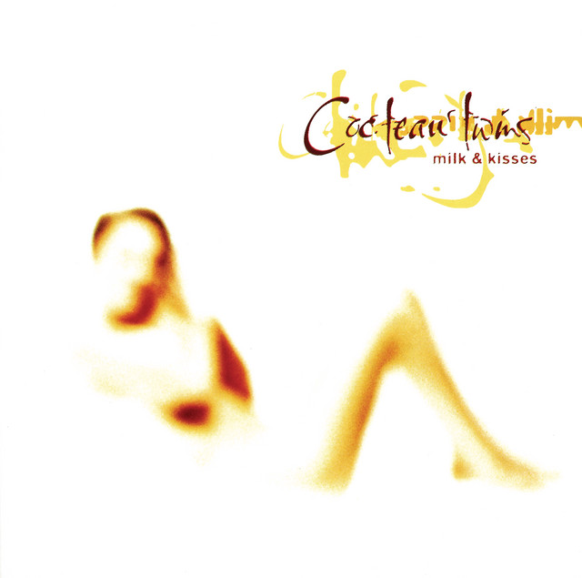

Serpentskirt - Cocteau Twins
One of my favorite songs, the beat, the vocals, even if the lyrics is inaudible it is still one of the best songs I've ever heard. I need more dreampop songs that are like this.
Wicked - Korn ft. Chino Moreno

I just love this song because Johnathan and Chino did a collab and I love these kinds of Nu Metal music, it's catchy
The Jetset Life is Gonna Kill You - My Chemical Romance

I really love the intro in this song, like I just love the beat I can't really explain it it's just unique and underrated.
Entombed - Deftones

The intro, the guitar, drums, bass, EVERYTHING. I cannot express how good this song is but this song is really divine and ethereal. Artists should make more songs like this